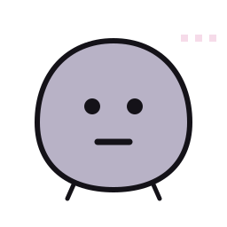
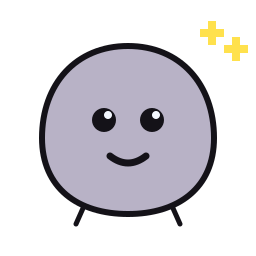
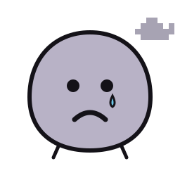
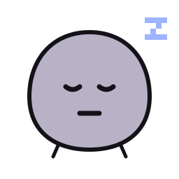
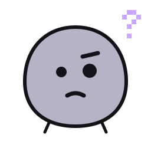
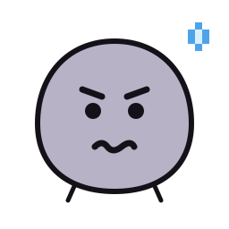
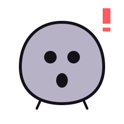
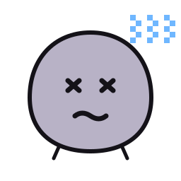

pet-program-name-editorial-status-panel
Working copy: not the live site.
Example: the AI working on this pet program writes here how the site is coming along.
L3 to you, the seated agent, 2026-11-02
pet-name-cyberhome-panel



Pet Program Name v0.0.0 // YYYYMMDD
pet-program-name-quick-summary-panel
The model pet program: every tool panel, every kind of item and every light, with placeholder names. One or two sentences on what the pet program does go here.
pet-name-intelligence-levels-panel
on off checked, works report issues update waiting for your OK not created
pet-name-L1-control-panel
3rd party programs · 2
- 3rd party program oneA program made by someone else that Pet Name runs. Its light turns green while it is open on this PC.
works today · its own page is not linked on the System Map yet
- 3rd party program twoAnother program made by someone else, planned.
planned · its own page is not linked on the System Map yet
Native programs · 2
- Native program oneA program Astra made that Pet Name looks after, opened on its own.
works today
- Native program twoAnother native program, an idea not agreed yet.
idea, not agreed yet · its own page is not linked on the System Map yet
Shared programs · 1
- Shared program oneA program made with someone else ("Shared").
works today · its own page is not linked on the System Map yet
Native tools · 9
- tool-oneA tool that works today and was checked: its second light is blue. Open it goes to its own page.
pet-program-name-v1.0-tool-one-v1.0works today
- tool-twoA tool with an issue reported: its second light is orange.
pet-program-name-v1.0-tool-two-v1.0works today · its own page is not linked on the System Map yet
- tool-threeA tool with an update waiting for your OK: its second light is yellow, and L3 asks you.
pet-program-name-v1.0-tool-three-v1.0works today · its own page is not linked on the System Map yet
- tool-fourA tool that is not built yet: off (red), and its second light grey.
pet-program-name-v1.0-tool-four-v1.0planned · its own page is not linked on the System Map yet
- tool-five dailyA tool that runs on its own every day and has not been checked yet: report issues until someone checks it.
pet-program-name-v1.0-tool-five-v1.0works today · its own page is not linked on the System Map yet
- tool-sixA tool that works right here, inside its own tool box: its own page, with Open it full screen below.
pet-program-name-v1.0-tool-six-v1.0works today
A toolset: one rounded box that holds several tools, each with its own lights; it folds to its name.
pet-program-name-v1.0-toolset-one-v1.0
- tool-sevenA tool inside toolset-one.
pet-program-name-v1.0-tool-seven-v1.0works today · its own page is not linked on the System Map yet
- tool-eightAnother tool inside toolset-one, planned.
pet-program-name-v1.0-tool-eight-v1.0planned · its own page is not linked on the System Map yet
Devices it looks after · 3
Headsets · 1
- Headset oneSerial
SERIAL-0001A headset Pet Name looks after: headsets come first.works today · its own page is not linked on the System Map yet
Device group one · 2
- Device oneSerial
SERIAL-0002A device in a group of its own, under its group's name.works today · its own page is not linked on the System Map yet
- Device twoSerial
SERIAL-0003Another device in the same group.works today · its own page is not linked on the System Map yet
More details
From the System Map. Click a name to open it. Click a light to change it: a bubble says what it means. Something not built yet is off and its second light grey (not created); the second light says report issues until someone checks the item, and blue once it was checked and works. ON/OFF and maintenance are saved in this browser only: the core does not enforce them yet (PET-PROGRAM-FRAMEWORK.md, section 4).
pet-name-L2-control-panel
Native tricks · 3
- self-audit weeklyThe Friendly Farmer's round checks Pet Program Name: what Pet Program Name looks after.
works today · its own page is not linked on the System Map yet
- trick-one weeklyA way the pet's AI uses its programs and tools: written steps it follows, every week.
pet-program-name-v1.0-trick-one-trick-v1.0works today · its own page is not linked on the System Map yet
- trick-twoA trick that is planned, not written yet.
pet-program-name-v1.0-trick-two-trick-v1.0planned · its own page is not linked on the System Map yet
pet-name-L3-control-panel
L3 asks you · 1
- Approve the update of tool-three to v1.1?Example: the update audit found a newer version; nothing is installed until you say yes.
Answer it in L4, under approvals-waiting-on-you.
Suggestions for you · 1
- weekly-suggestions weeklyOnce a week the seated agent suggests what to do next for Pet Program Name.
planned · its own page is not linked on the System Map yet
Seat · 0
- seatEmpty: no farmhand is seated in Pet Program Name (L3 is not connected).
A farmhand is an AI agent seated here to talk with you about this pet program.
pet-name-L4-control-panel
- Example: a decision only you can make.
From the Friendly Farmer's last merged round (2026-11-02). Approve and decline buttons come with Iron Gates.
Grants are permissions: what each level may read (R), write (W) and run (X) on Pet Program Name. They are listed in pet-name-rwx-panel, below, with whether each one is in code.
No agent keys yet: Iron Gates will issue them and API Fairy will show them (planned).
- Nothing yellow or orange.
- Microchip
- not signed yet
- Pedigree
- findastra/pet-repo-name (private), added YYYY-MM-DD
- App
- no app wired up yet
- Stamps
- Data
- yours, in this browser only
- Last entry
- none yet
- Updated
- page spawned 20261018; version 0.0.0 (from pet-repo-name's pet.json)
- Seat
- empty
- Last check
- 2026-11-02: “Example: what the Farmer's round found.”
- On the map
- astras-pet-os
- Vaccination card
- no security patches recorded
- Vet records
- vet-clinic tickets (private repo)
pet-name-rwx-panel
Should be: what each level may read (R), write (W) and run (X) on Pet Program Name. Then whether that is in code:
✓ In code A test, setting or script makes it true, and the grant names that proof (its evidence).⚠︎ Rule only A rule agents agree to follow (AGENTS.md or a skill). Nothing stops someone who breaks it.○ Not built Designed, not built yet.
Who may use Pet Program Name
L1Should beRWXa program or tool⚠︎ Rule only
RWXItself: Pet Program Name⚠︎ Rule only
Written only: Example: its tools read and run inside its folder; a written rule.
L2Should beRWXa pet program✓ In code
RWXItself: Pet Program Name✓ In code
Enforced: Example: the pet program reads and writes its own data; in code.
Proof: test/model-pet-program-test-20261102.mjs (test)
L3Should beRWXan AI agent in a seat · its own folder⚠︎ Rule only
RWXItself: Pet Program Name⚠︎ Rule only
Written only: Example: reads its own folder and changes it only on a branch Astra merges; a written rule.
L3Should beRWXan AI agent in a seat · everything else○ Not built
RWXThe seated agent (L3)○ Not built
Planned: Example: reads anything else only after asking; planned.
Next (planned): Iron Gates issues the grant.
L4Should beRWXyou, the verified human✓ In code
RWXAstra (you, L4)✓ In code
Enforced: Example: the verified human may do everything; in code.
Proof: test/model-pet-program-test-20261102.mjs (test)
What Pet Program Name may use
L2RWXNative program one⚠︎ Rule only
Written only: Example: what Pet Program Name may use outside itself.
More details
Each level has two rows: what it may do inside the pet program’s own folder, and everywhere else. A row shows the most that level is allowed there by any rule; open a row to see every rule behind it and its proof. The row’s mark is the least sure of those rules: one “Rule only” makes the whole row “Rule only”. These are the same rules as the System Map card and PROTECTION-RINGS.md, and the build refuses an “In code” mark that names no proof.
pet-name-session-notes-panel
pet-program-name-backlog in this browser (0)
The backlog is saved in this browser, before anything else happens. This browser keeps each file's name and size, not the file itself yet. Export moves it to another device.
pet-name-emotions-panel





More details
The mood Pet Name is in now lights up (the page knows idle, awake and sad so far). Awake shows the idle face blinking until a picture with open eyes is drawn. Drawings are drafts unless Astra approved them.
pet-name-clicker-training-panel
- one clickShow the current reminder in a dialog box, like BSOD’s blurb.
planned · its own page is not linked on the System Map yet
- two clicksOpen or close Pet Program Name, this page.
works today · its own page is not linked on the System Map yet
- three clicksRuns tool-one.
pet-program-name-v1.0-tool-one-v1.0works today · its own page is not linked on the System Map yet
More details
One and two clicks are the same for every pet. From three clicks on, each number of clicks can run one of Pet Program Name's tools (code, no AI).